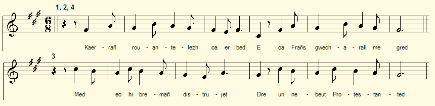

Loeiz XVI (dastumet gant Ao F. Cadic)
Louis XVI (version F. Cadic)
Louis XVI (as collected by F. Cadic)
Texte recueilli par l'Abbé François Cadic
Publié dans "La Paroisse Bretonne" en février 1911
Mélodie
L'Abbé Cadic publie ce poème ainsi qu'une autre longue pièce en français sue le même sujet, sans accompagnement musical.
L'air ci-dessus est tiré de "Mélodies de Bretagne" de
Arrangement Christian Souchon (c) 2012
|
BREZHONEG (Stumm KLT) LOEIZ XVI 1. Kaerrañ rouantelezh oa er bed, E oa Frañs gwecharall me gred, Med eo-hi bremañ distrujet Dre un nebeut Protestanted, 2. Dre tud, reveulzerien da Zoue O-deus lakaet en o spered Kompozañ ul lezenn nevez: Kompozañ ul lezenn nevez: 3. Evit an Nasion ne faot ket Oboisañ da Zoue, da roue erbet. Al Liberté, n Egalité: Setu holl o doueed aze. 3 bis. Vel ur chrouadur, ar Roue Chwezek O-deus lakaet da vervel 4. War ar chafod eñ dibennet Er ger a Bariz, mamm hon roueed, Hag o fennoù war ar pave Oa stlapet gant ar vugale. 5. Roit deomp daoulagat, O ma Doue, Evit skuilhañ holl hon dareoù Evit ma ouelomp noz ha deiz Ag ar vro-mañ ar gwalleurioù Transcrit par Christian Souchon |
FRANCAIS LOUIS XVI 1. Ici-bas le plus beau des royaumes Cétait la France jadis. A la désolation quelques hommes, Des Protestants, lont soumis. 2. Des révolutionnaires, des traîtres Ourdirent un plan odieux. Ils nous imposent, ces nouveaux maîtres Des règles ignorant Dieu. 3. Pour la Nation point dobéissance A Dieu, non plus quau Roi. Mais Deux dieux seuls méritent révérence : Egalité, Liberté. 3 bis. Le roi Louis XVI, ange de patience, Un jour, ils lont mis à mort... 4. Sur léchafaud ont tranché sa tête, En sa ville de Paris, Roulant sur les pavés où la guettent, Pour jouer avec, les petits. 5. Mon Dieu, pour que nous versions nos larmes, Sur tant de méfaits affreux, De notre patrie le sort infâme, Seigneur, donne-nous des yeux! Traduction Christian Souchon (c) 2019 |
ENGLISH LOUIS XVI 1. The fairest kingdom here below, It was France of old, as I know. But it has gone to wrack and ruins, Because of some Protestant loons, 2. Of men who God and faith reject. They conceived the odious project To impose on us a new law Of which we were to stand in awe. 3. The "Nation" wants us to obey Neither God nor King. The only Gods to whom we're allowed to pray Are Freedom and Equality. 3 bis. Like a lamb, King Louis the Sixteenth Was by these people guillotined, 4. Was beheaded on the scaffold In Paris, the old kings' stronghold Where heads roll over the pavement Much to the children's amusement! 5. O listen, our God, to our cries For so many tears, make us eyes, For us to bewail, day and night Our hapless country's dreadful plight! Translation: Christian Souchon (c) 2019 |
NOTE:
| Voici la présentation que l'Abbé Cadic fait de ce chant: "Poème breton, collecté il y a quelques années à Séglien [entre Guéméné et Pontivy]. Le vieillard qui nous la récita disait la tenir de réfractaires avec lesquels il avait quelque peu « chouanné » lui-même en son jeune temps. Elle remontait, prétendait-il, à lépoque de la Révolution. Nous le croyons volontiers. Celle-là aussi dut être composée en lannée qui vit le supplice du roi et de la reine [1792]. En son langage énergique et expressif, elle traduit bien les sentiments dont devaient être animés les rudes hommes de guerre qui se la répétaient de lun à lautre, la nuit à la veillée du bivouac sur la lande. | Here is the presentation that Abbé Cadic makes of this poem: "A Breton poem, collected a few years ago at Séglien [between Guéméné and Pontivy]. The old man who recited it told us that it had learned it from rebels who were his fellow Chouan fighters "back then, in his youth, at the time of the Revolution", and we believe it willingly.This too must have been composed in the year when the King and Queen [1792] were executed. In its energetic and expressive language, it mirrors the feelings which animated the tough men of war who would sing it, at night when bivouacking on the moor." |
"Loeiz XVI" de La Villemarqué (c2, pp.19-20)
"Marv Loeiz XVI" de La Villemarqué (c2, p.42)
Table